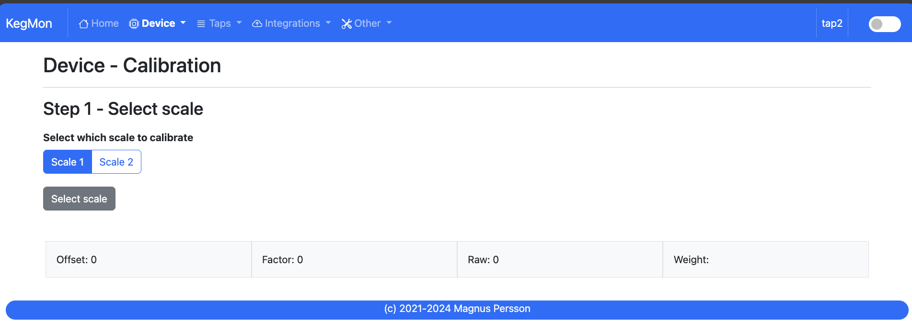
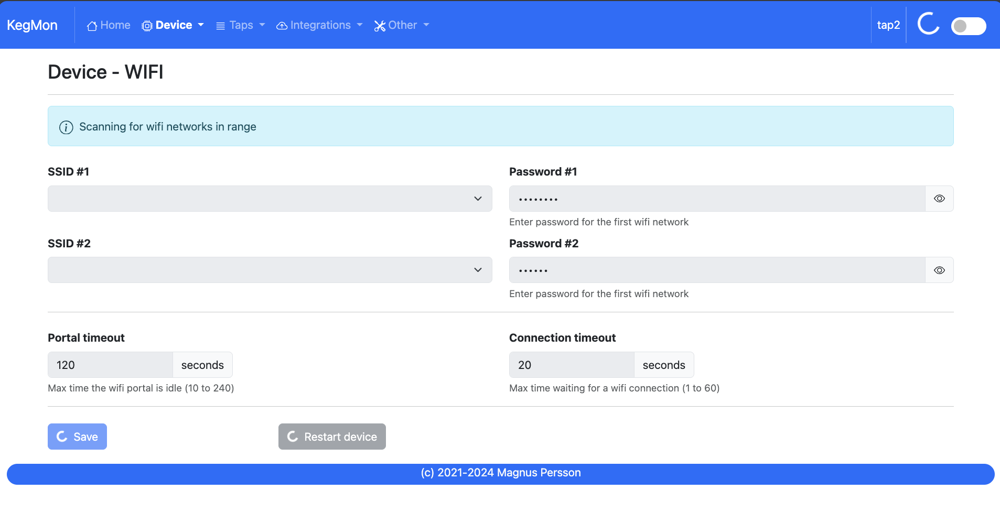
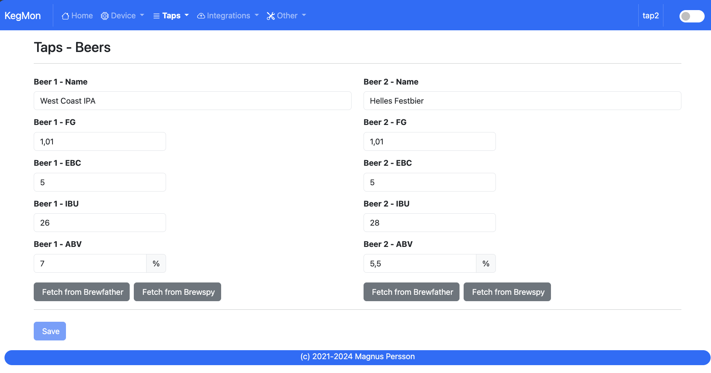

Software¶
Index¶
This is the web page accessed by accessing the device via a web-browser. This section will show the general device information.

Shows information about the device and temperatures, only data available will be shown.
Device - Settings¶
Device name: Set the name of the device on the network, your network needs to support mDNS.
Temperature format: Select format for temperatures
Weight unit: Select format for weights
Volume unit: Select format for volumes
Dark Mode: Switches the UI between light and dark mode. You can also use the toggle on the menubar for that.
Device - Hardware¶
TODO: Missing hardware screen dump

Display layout: Choose the layout/information on the displays.
Display driver: Choose the what display driver is used, either LCD 20x4 or OLED 0.96”. Default is OLED 0.96”.
Temp sensor: Choose the what temp sensor is used, either DHT22, BME280, DS18B20 or remote BrewPI-ESP installation. Default is DS18B20. Wiring for BME280 is different.
Scale sensor: Choose the what ADC is used, HX711 or NAU7802. Default is HX711. Wiring for NAU7802 is different.
BrewPI ESP URL: Base URL for the brewpi-esp to fetch temperature from. Require v15 or later.
Pins: If you dont follow the standard hardware wiring then you can customize the pins here.
Device - Calibration¶
STEP 1 - Tare scale
The first step is to tare the scale. First select the scale from the dropdown list that you want to operate on. Make sure the scale is empty.
STEP 2 - Calculate factor
The second step is to calculate the factor used to calculate the weight. Place a thing with a known weight on the scale and enter the weight of that object. The software will then calculate the factor for estimating the weight.
STEP 3 - Validate
The third step is to validate that everything works, place anohter thing with a know weight and check the measured value. If you are satisfied then you are done.
Device - Wifi¶
SSID #1:
Select the desired primary SSID to use.
Password #1:
Enter the primary password.
SSID #2:
Select the desired secondary SSID to use (optional).
Password #2:
Enter the secondary password (optional).
Portal timeout:
If the wifi portal is triggered (can be triggered by tapping the reset button 2-3 times within 3 seconds) then this is the amount of time allowed before it exists again.
Connect timeout:
This is the amount of time allowed for a wifi connect.
Tap Settings¶

Empty keg weight: Weight of the empty keg, used to determine how much beer is in the keg.
Glass volume: Choose the volume of the beer glasses, used to determine how many pours are left.
Beer name, Beer ABV, Beer EBC, Beer IBU: Information about the beer, used to show on user interfaces.
Beer FG: Used in formula for calculating the beer volume. FG has a slight impact on the weight / volume unit. If not defined 1 will be used for calculations.
Tap Settings¶
Shows information about beers on tap. Use the buttons to import from brewspy or brewfather.


History¶
TODO: Not yet implemented in new UI
Stability¶
TODO: Not yet implemented in new UI
Information page that can determine the stability of your hardware build.
I have found that some of my hardware builds was not really stable so I added this feature to check the scale build before doing the final assembly.
If you keep the browser open you can also see the history of the values (raw, kalman & stable). This can help to show how your scale varies over time. Data is only stored in the browser so any refresh or page change will delete the graphs.

Firmware update¶

Here you can upload a new firmware version without the need to hook the device to a serial port on your computer.

{kind=link}
{kind=link}
{kind=link}
{kind=link}
{kind=link}
{kind=link}